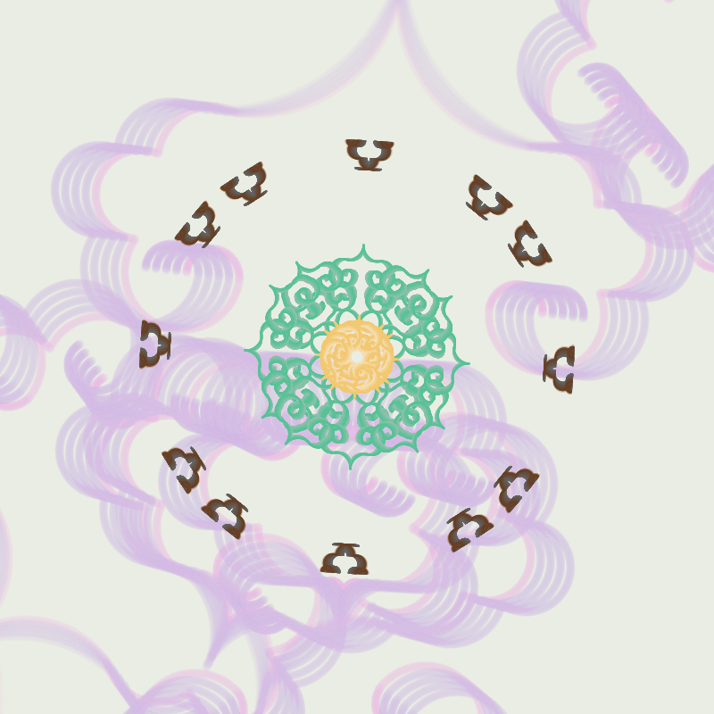

This work was initialized at Mid-Autumn Festival in 2022, the inspiration came from moon cakes.
The moon cake is a traditional food in China for Mid-Autumn Festival, symbolizing the beautiful meaning of reunion and harmony.
The pattern of the mooncake is very particular, the different pattern displays the different meaning. The pattern could come from the daily life, myths or good wish.
The ancient pastry cook is used to delicately carve some traditional patterns on the moon cake, giving the moon cake vivid connotation.
"Ru Yi" pattern is an important and representative symbol of Chinese patterns. It's playing the role of decoration of porcelain, lacquerware, jewellery, clothing and ect.
If observing its shape, it could be formed by a symmetrical structure of heart, which looks like the cloud. It has not only one shape but variety extended forms.
As a traditional Chinese auspicious pattern, Ruyi pattern has profound meaning for Chinese people and has been used on many products.
Tattoo of the mooncake
The pattern "Ru Yi" is one of the typical patterns on the mooncake, expressing the yearning for a better life and good wishes.
- 
I wanted to code something with Chinese characteristics, Ruyi form gives me some idea.
I am using "heart-shaped" RuYi pattern, drawing pictures with symmetrical structure.


By Controlling the parameters, the shapes and numbers of Ruiyi can be different, but always be symmetrical.
The background is a single pattern which can be easily obeserved its shape.
It's my first try to take up an Chinese element in the art coding. During my search and coding, I realized there are lots of interesting Chinese characteristics and patterns. I am looking forward to doing some deep research and using them in future's works.